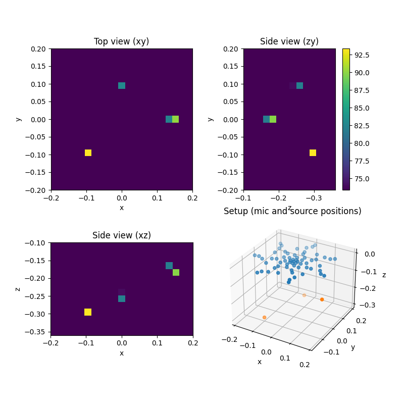

Note
Go to the end to download the full example code.
3D Beamforming with CLEAN-SC deconvolution.¶
Demonstrates a 3D beamforming setup with simulated point sources. Simulates data on 64 channel array, subsequent beamforming with CLEAN-SC on 3D grid.
from pathlib import Path
import acoular as ac
import matplotlib.pyplot as plt
import numpy as np
First, we define the microphone geometry.
micgeofile = Path(ac.__file__).parent / 'xml' / 'array_64.xml'
m = ac.MicGeom(file=micgeofile)
Now, the sources (signals and types/positions) are defined. Note that the orientation of the co-ordinate system lets the negative z-axis point away from the planar array with all microphones in the xy-plane (right-handed co-ordinates). Thus the sources locations do all have negative z-values.
sfreq = 51200
duration = 1
num_samples = duration * sfreq
n1 = ac.WNoiseGenerator(sample_freq=sfreq, num_samples=num_samples, seed=1)
n2 = ac.WNoiseGenerator(sample_freq=sfreq, num_samples=num_samples, seed=2, rms=0.5)
n3 = ac.WNoiseGenerator(sample_freq=sfreq, num_samples=num_samples, seed=3, rms=0.25)
p1 = ac.PointSource(signal=n1, mics=m, loc=(-0.1, -0.1, -0.3))
p2 = ac.PointSource(signal=n2, mics=m, loc=(0.15, 0, -0.17))
p3 = ac.PointSource(signal=n3, mics=m, loc=(0, 0.1, -0.25))
pa = ac.SourceMixer(sources=[p1, p2, p3])
Next, the 3D grid defining the source region is set up (very coarse to enable fast computation for this example). Note that the grid has not grid point at the exact location of sources 2 and 3.
g = ac.RectGrid3D(x_min=-0.2, x_max=0.2, y_min=-0.2, y_max=0.2, z_min=-0.1, z_max=-0.36, increment=0.02)
The following provides the cross spectral matrix and defines the CLEAN-SC beamformer.
f = ac.PowerSpectra(source=pa, window='Hanning', overlap='50%', block_size=128)
st = ac.SteeringVector(grid=g, mics=m, steer_type='true location')
b = ac.BeamformerCleansc(freq_data=f, steer=st)
Calculate the result for 4 kHz octave band. The result will automatically be cached to disk. By default, the corresponding cache file is located in the cache directory of the current working directory.
map = b.synthetic(4000, 1)
[('SourceMixer_4d1a4a76b05d225bb41892f82d0b07ae_cache.h5', 1)]
[('SourceMixer_4d1a4a76b05d225bb41892f82d0b07ae_cache.h5', 2)]
Display views of setup and result. For each view, the values along the repsective axis are summed.
fig = plt.figure(1, (8, 8))
# plot the results
ax1 = fig.add_subplot(2, 2, 1)
map_z = np.sum(map, 2)
mx = ac.L_p(map_z.max())
ax1.imshow(
ac.L_p(map_z.T),
vmax=mx,
vmin=mx - 20,
origin='lower',
interpolation='nearest',
extent=(g.x_min, g.x_max, g.y_min, g.y_max),
)
ax1.set_xlabel('x')
ax1.set_ylabel('y')
ax1.set_title('Top view (xy)')
ax2 = fig.add_subplot(2, 2, 3, sharex=ax1)
map_y = np.sum(map, 1)
ax2.imshow(
ac.L_p(map_y.T),
vmax=mx,
vmin=mx - 20,
origin='upper',
interpolation='nearest',
extent=(g.x_min, g.x_max, g.z_max, g.z_min),
)
ax2.set_xlabel('x')
ax2.set_ylabel('z')
ax2.set_title('Side view (xz)')
ax3 = fig.add_subplot(2, 2, 2, sharey=ax1)
map_x = np.sum(map, 0)
im3 = ax3.imshow(
ac.L_p(map_x),
vmax=mx,
vmin=mx - 20,
origin='lower',
interpolation='nearest',
extent=(g.z_min, g.z_max, g.y_min, g.y_max),
)
ax3.set_xlabel('z')
ax3.set_ylabel('y')
ax3.set_title('Side view (zy)')
fig.colorbar(im3, ax=ax3)
ax0 = fig.add_subplot(2, 2, 4, projection='3d')
ax0.set_title('Setup (mic and source positions)')
ax0.scatter(m.pos[0], m.pos[1], m.pos[2])
source_locs = np.array([p1.loc, p2.loc, p3.loc]).T
ax0.scatter(source_locs[0], source_locs[1], source_locs[2])
ax0.set_xlabel('x')
ax0.set_ylabel('y')
ax0.set_zlabel('z')
plt.show()

Total running time of the script: (0 minutes 3.078 seconds)